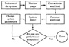

CHAPTER 9
CAPACITY PLANNING AND BENCHMARKING
Do not plan a bridge capacity by counting the number
of people who swim across the river today.
—Heard at a presentation
One of the important problems for managers of data processing installations is capacity planning, which requires ensuring that adequate computer resources will be available to meet the future workload demands in a cost-effective manner while meeting the performance objectives. The term capacity management is used to denote the problem of ensuring that the currently available computing resources are used to provide the highest performance. Thus, capacity management is concerned with the present while capacity planning is concerned with the future.
The alternatives for capacity planning usually consist of procuring more computing resources, while the alternatives for capacity management consist of adjusting usage patterns, rearranging configuration, and changing system parameters to maximize the performance. The process of adjusting system parameters to optimize the performance is also called performance tuning.
To compare the performance of two competing systems in an objective manner, benchmarks are run on these systems using automatic load drivers. The mistakes and games of benchmarking as well as the issues related to load drivers are discussed in this chapter.

FIGURE 9.1 Steps in capacity planning process.
9.1 STEPS IN CAPACITY PLANNING AND MANAGEMENT
Figure 9.1 shows the steps in the capacity planning process. For planning as well as management, the steps are basically same:
- 1. Instrument the system.
- 2. Monitor system usage.
- 3. Characterize workload.
- 4. Predict performance under different alternatives.
- 5. Select the lowest cost, highest performance alternative.
The first step is to ensure that there are appropriate counters and hooks in the system to record current usage. In most cases, the counters already built in the operating systems, application software, and I/O devices are used. Use of accounting log data is probably the most popular method. The second step consists of monitoring the usage and characterizing the workload. This requires gathering data for a period of time and analyzing and summarizing it in a form so that it can be used as input to a system model for performance prediction.
For capacity management, the current configuration and workload are input into a tuning model that advises changes in a system parameter setting. This model is either a detailed simulation of the system or contains a set of rules developed specifically for the system. For example, one of the rules may be to advise balanced placement of files if a highly skewed usage of disk devices is seen.
For capacity planning, first the workload is forecasted based on long-term monitoring of the system. Then different configuration alternatives and future workloads are input to a model that predicts performance. This later step of equipment selection is also called sizing. The models for sizing are generally less detailed than tuning models. Often, analytic modeling techniques such as queueing models are used for sizing since the list of alternatives includes a wide variety of new hardware and software components for which detailed models may not yet exist. Thus, while the tuning models are detailed and system specific, the planning models are coarse and system independent or at least less system specific. In many sites, simple rules of thumb, such as demand increasing by a factor x every y years, are used for long-term planning. In many installations, the future workload is so unknown that more sophisticated prediction techniques may not be of great help.
9.2 PROBLEMS IN CAPACITY PLANNING
Most of the capacity planning literature deals with selecting performance metrics, monitoring techniques, workload characterization, forecasting, and modeling techniques. Since each of these issues is discussed in different parts of this book, the discussion here is limited to the list of problems faced by capacity planners. These problems are discussed next.
- 1. There is no standard terminology. Every vendor of capacity planning tools has a different definition of capacity management, capacity planning, sizing, tuning, and so on. Often one buys a capacity planning tool only to find out later that it does only tuning or sizing and has no workload measurement or characterization facilities. Some vendors use the term capacity management to include both capacity planning and tuning. Others use it to denote tuning only.
- 2. There is no standard definition of capacity. There are several possibilities. One definition of capacity, in terms of the maximum throughput, was presented in Section 3.3. Throughput is measured in requests per unit time, for example, jobs per second, Transactions Per Second (TPS), Instructions Per Second (MIPS), or bits per second (for network links). Another possibility is to define capacity as the maximum number of users that the system can support while meeting a specified performance objective. In this definition, users is only an example of what has been termed workload unit. Other workload units are sessions, tasks, activities, programs, jobs, accounts, projects, and so on, and the capacity is expressed in these units. Workload units are also called workload components.
- 3. There are a number of different capacities for the same system. In Section 3.3, three capacities—nominal capacity, usable capacity, and knee capacity—were described. Other capacity terms that have been used in the literature are practical capacity (usable capacity) and theoretical capacity (nominal capacity).
- 4. There is no standard workload unit. The problem with measuring capacity in workload units, such as users or sessions, is that it requires a detailed characterization of the workload unit that varies from one environment to the next. It is because of this difficulty that the workload-independent capacity measures, such as MIPS, are still popular. System managers forecast and plan for their future in terms of their MIPS requirements.
- 5. Forecasting future applications is difficult. Most of the forecasting is based on the assumption that the future trend will be similar to the past. This assumption is violated if a new technology suddenly emerges. For example, many old predictions based on mainframe usage are no longer valid due to the introduction and popularity of low-cost work-stations. A number of new applications have also become possible due to the high-performance computing capacity available at the desk.
- 6. There is no uniformity among systems from different vendors. The same workload takes different amounts of resources on different systems. This requires developing a vendor-independent benchmark and running it on different systems. Also, separate models (simulation or analytical) have to be developed for each system. It is possible to inadvertently introduce bias at any of these stages.
- 7. Model inputs cannot always be measured. Simulation or analytical models are used to predict the performance under different alternatives. Sometimes the inputs required for the model are not accurately measurable. For example, “think time” is commonly used in analytical models. In a real environment, the time between successive commands from the user may include thinking as well as other interruptions such as coffee breaks. It is almost impossible to correctly measure think time.
Determining model inputs becomes even more difficult if the monitoring tool, workload analysis tool, and modeling tools are from different vendors. The output of one step may not be in a format usable by the next step.
- 8. Validating model projections is difficult. There are two types of model validations. The first type, baseline validation, requires using the current workload and configuration in the model and verifying that the model output matches the observed system performance. The second validation, called projection validation, requires changing the workload and configuration and verifying that the model output matches the changed real system’s performance. While it is easy to change inputs to a model, it is difficult to control the workload and configurations on a real system. For this reason, projection validations are rarely performed. Without projection validations, the use of the model for capacity planning is suspect.
- 9. Distributed environments are too complex to model. Initial computer systems consisted of only a few components. Each component was expensive enough to justify the cost of accurately modeling its behavior. Also, the number of users on the system was large. Thus, even though each user’s behavior is highly variable, the aggregate performance of all users did not vary that much and could be modeled accurately. In distributed environments of today, the system consists of a large number of semi-autonomous clients, servers, network links, and I/O devices. Workstation usage is very different from others, and the interactions are also rather complex. Also, the cost of individual components is not high enough to justify accurate modeling.
- 10. Performance is only a small part of the capacity planning problem. The key issue in capacity planning is that of cost, which includes the cost of the equipment, software, installation, maintenance, personnel, floor space, power, and climate control (cooling, humidity control). Performance modeling helps only in sizing the equipment. However, as the cost of computer hardware is declining, these other costs are becoming dominant and have become a major consideration in capacity planning.
){kind=link}
){kind=link}